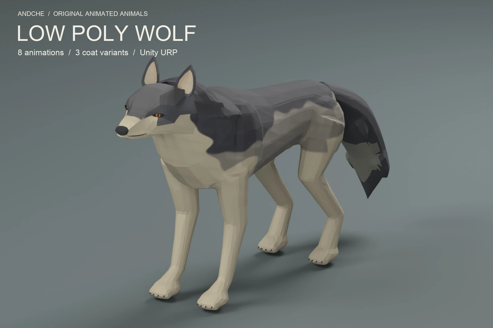
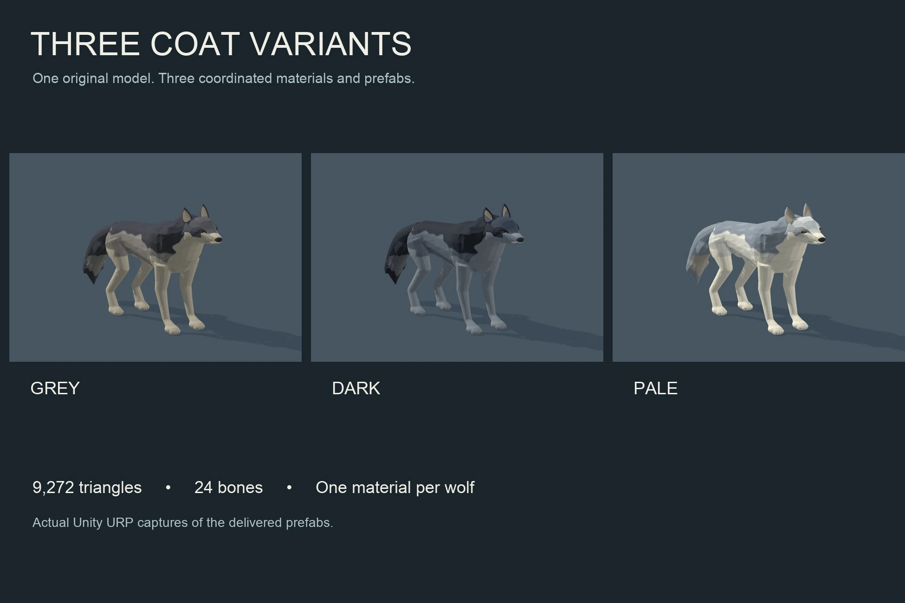
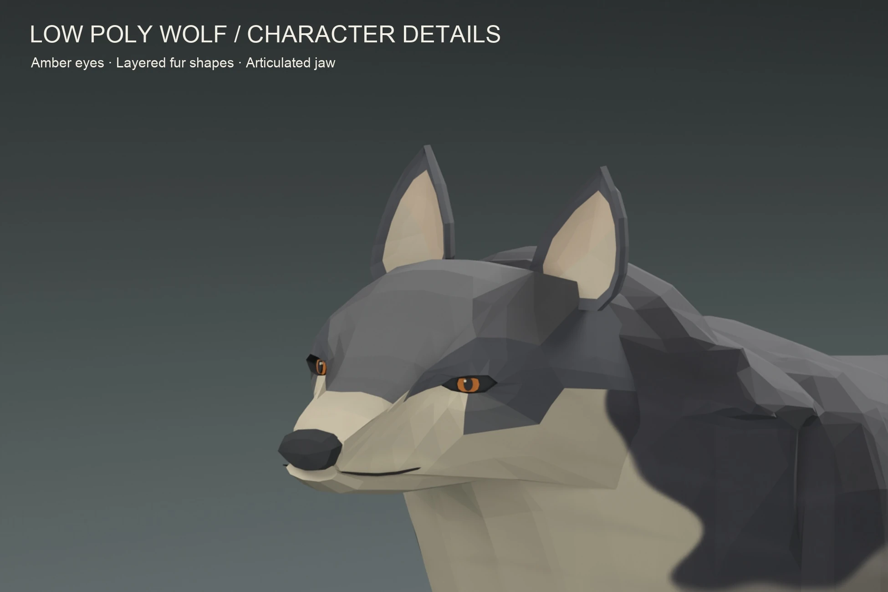
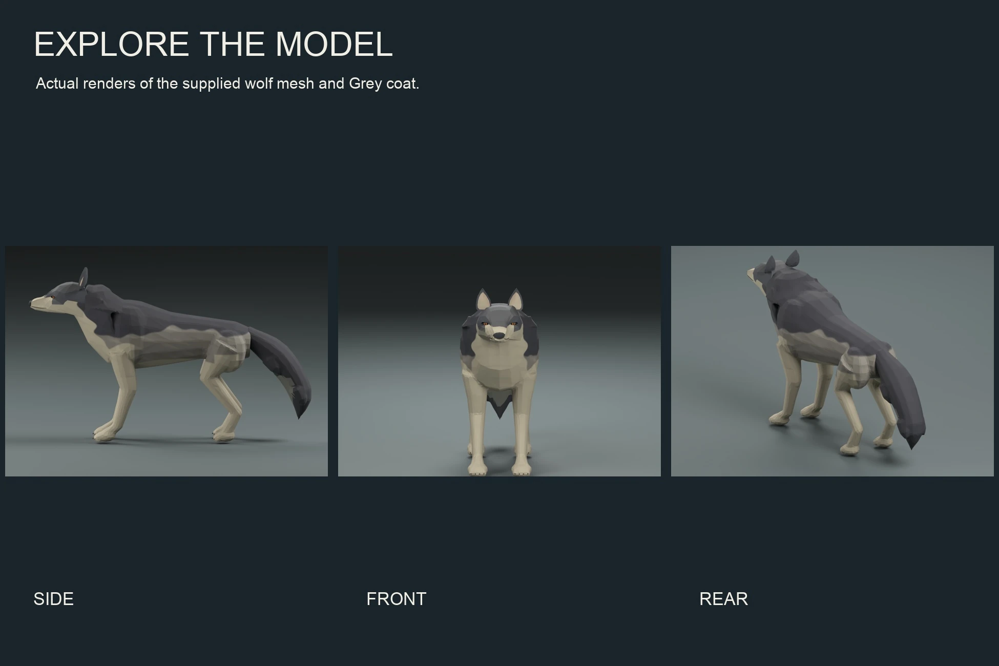
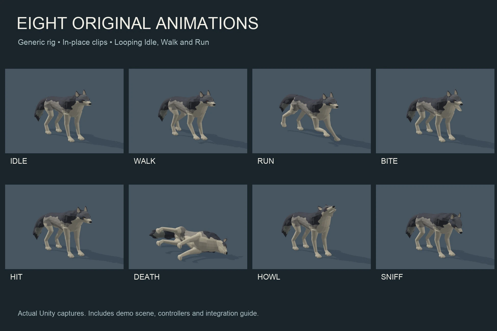

Animated wildlife / Stylized animal / Unity URP
Low Poly Wolf
A familiar silhouette for your wilderness. Amber eyes, layered fur shapes and three coordinated coats bring character to stylized forests and fantasy encounters.
Awaiting Unity approval · $9.99 USD
Submitted to Unity Asset Store on 4 November 2026. Not available to purchase yet; no release date is confirmed.

Watch all eight animations.
Actual Unity captures at original playback speed. Idle, Walk, Run, Bite, Hit, Death, Howl and Sniff. Silent preview; no audio is included.
Ready for your own encounters.
Start with a Grey, Dark or Pale wolf prefab. Use the locomotion controller to switch between idle, walk and run, and trigger the action clips from your gameplay code.
Inspect the asset in the included interactive URP studio, with animation and coat controls. English documentation covers the rig, controller parameters and integration.
Inside the package
- One original wolf mesh and editable rigged FBX
- 24-bone Generic rig and 8 in-place animation clips
- 3 coat materials and creature prefabs
- Locomotion and direct-playback Animator controllers
- Interactive Unity URP demo scene
- Optional local ground-clearance helper
- English integration and rig guides

A closer look.






Technical details
9,272 triangles, 4,724 source vertices and 24 bones. Flat normals and UV boundaries produce 20,370 imported render vertices. One skinned mesh and one material per wolf; up to four bone influences per vertex.
Three 512 × 512 base-colour atlases. No normal, metallic or AO maps. One mesh resolution; no LODs. Metre scale, ground-level origin and +Z forward.
Tested with Unity 6000.3.23f1 and URP 17.3.0. Supplied materials and demo support URP only.
Know before you build
This is a visual asset. Movement, AI, navigation, combat logic, audio, colliders and ragdoll are not included. All clips are in-place, without root motion. The Generic rig is not a Humanoid rig; retargeting to other models is not supplied.
At playback rate 1, the authored matching movement speeds are 0.538 m/s for Walk and 3.6 m/s for Run. The optional clearance helper handles brief local floor penetration during blends, not uneven-terrain IK.
On-screen demo controls work without gameplay input. Optional keyboard/mouse shortcuts use the classic Input Manager.
Build a world around the wolf.
Explore Forest & Cliffs for woodland environments, or meet the smaller creatures in our Low Poly Rats and Green Spider packs.
Explore all assets Ask about compatibility ↗Updated 4 November 2026. Planned price before taxes. Unity Asset Store controls final availability and local pricing.